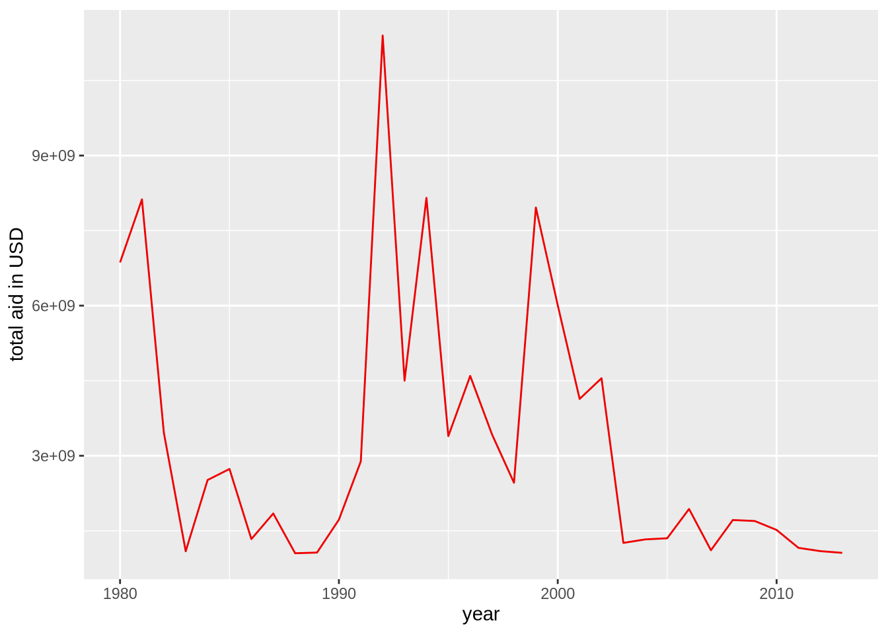
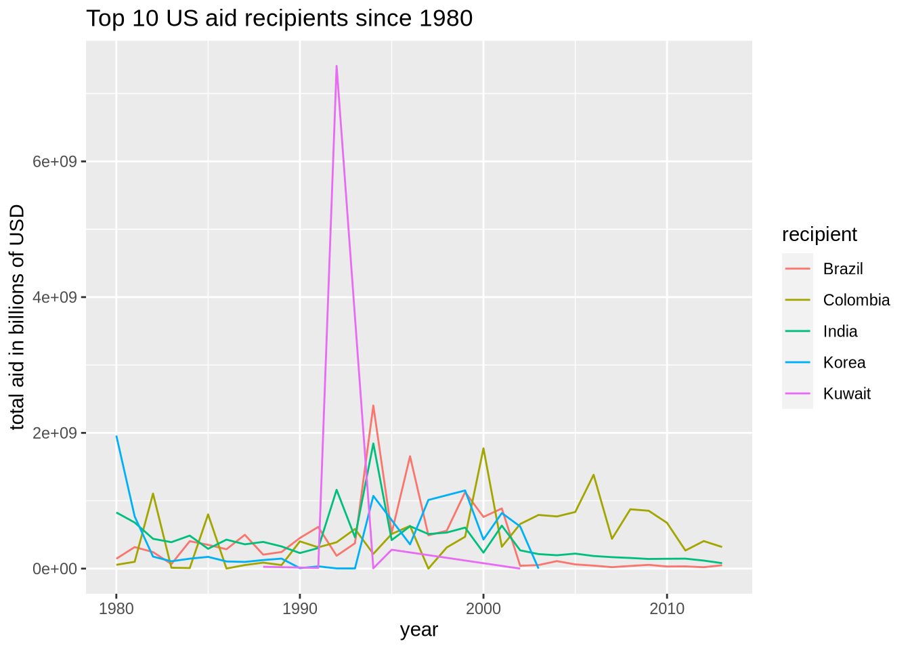
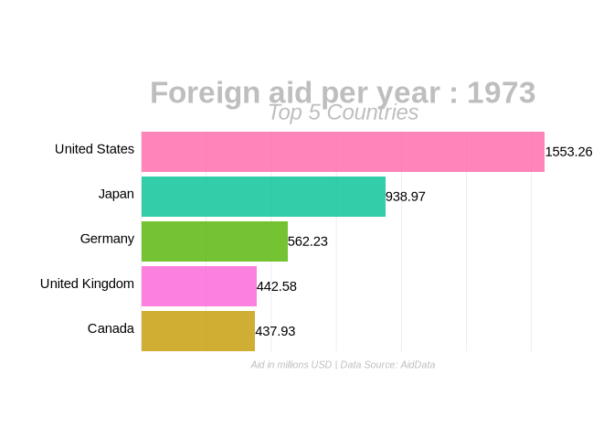

We will be using AidData’s data set aiddata-countries-only.csv to give an answer to some of the following questions
First we need to import the data and filter it appropriately. The variable donations_since_1980 holds donations committed by countries all countries since 1980, and of those donations_usa holds donations committed by the USA. (Note that we rename some of the accessors for ease of use.)
aid_data <- read_csv("1_Data/aiddata-countries-only.csv") %>%
rename(amount = commitment_amount_usd_constant,
purpose = coalesced_purpose_name,
p_code = coalesced_purpose_code)
aid_since_1980 <- aid_data %>% filter(year >= 1980)
us_aid <- aid_since_1980 %>% filter(donor == "United States")Now, let us look at the total foreign aid provided by the US (adjusted for inflation) within this 40 year period. The following code tries to fit a smooth curve to the data.
us_aid %>%
group_by(year) %>%
summarize(total_aid = sum(amount)) %>%
ggplot() +
geom_line(se = FALSE,
mapping = aes(x = year, y = total_aid),
color = "red2") +
labs("Total aid commited by the US to foreign countries since 1980 in USD") +
ylab("total aid in billions of USD")## `summarise()` ungrouping output (override with `.groups` argument)## Warning: Ignoring unknown parameters: se
Interesting. So foreign aid from the US has gone down markedly since the late 1990s. Next let us take a look at the top 10 recipients of foreign aid from the US in the last 40 years. First we will rank them by total amount of US aid received since 1980.
names <-
us_aid %>%
group_by(recipient) %>%
summarize(total_us_aid = sum(amount)) %>%
arrange(desc(total_us_aid)) %>%
ungroup() %>%
slice(1:5) %>%
pull(recipient)
top_5_recipients <- us_aid %>% filter(recipient %in% names)
top_5_recipients %>%
group_by(recipient,year) %>%
summarize(total_aid = sum(amount)) %>%
ungroup() %>%
ggplot() +
geom_line(se = FALSE,
mapping = aes(x = year, y = total_aid, color = recipient)) +
labs(title = "Top 10 US aid recipients since 1980") +
ylab("total aid in billions of USD")
Now let’s take a closer look at these countries and, specifically what US aid was used for. Let us take a look at how the US compares to other countries
aid_donors <- aid_data %>%
group_by(year,donor) %>%
summarize(total = sum(amount)) %>%
mutate(rank = rank(-total)) %>%
filter(rank <= 5) %>%
mutate(total_lbl = round(total/1e6,2)) %>%
ungroup()
staticplot <- aid_donors %>%
ggplot(aes(rank,
group = donor,
fill = as.factor(donor))) +
geom_tile(aes(y = total/2,
height = total,
width = 0.9),
alpha = 0.8,
color = NA) +
geom_text(aes(y = 0,
label = paste(donor, " ")),
vjust = 0.2,
hjust = 1) +
geom_text(aes(y = total, label = total_lbl, hjust = 0)) +
coord_flip(clip = "off", expand = FALSE) +
scale_y_continuous(labels = scales::comma) +
scale_x_reverse() +
guides(color = FALSE, fill = FALSE) +
theme(axis.line=element_blank(),
axis.text.x=element_blank(),
axis.text.y=element_blank(),
axis.ticks=element_blank(),
axis.title.x=element_blank(),
axis.title.y=element_blank(),
legend.position="none",
panel.background=element_blank(),
panel.border=element_blank(),
panel.grid.major=element_blank(),
panel.grid.minor=element_blank(),
panel.grid.major.x = element_line( size=.1, color="grey" ),
panel.grid.minor.x = element_line( size=.1, color="grey" ),
plot.title=element_text(size=25, hjust=0.5, face="bold", colour="grey", vjust=-1),
plot.subtitle=element_text(size=18, hjust=0.5, face="italic", color="grey"),
plot.caption =element_text(size=8, hjust=0.5, face="italic", color="grey"),
plot.background=element_blank(),
plot.margin = margin(2,2, 2, 4, "cm"))
anim <- staticplot +
transition_states(year, transition_length = 4, state_length = 1) +
view_follow(fixed_x = TRUE) +
labs(title = 'Foreign aid per year : {closest_state}',
subtitle = "Top 5 Countries",
caption = "Aid in millions USD | Data Source: AidData")
animate(anim, 200, fps = 7, end_pause = 10, renderer = gifski_renderer("animation.gif")) #cite https://towardsdatascience.com/create-animated-bar-charts-using-r-31d09e5841da